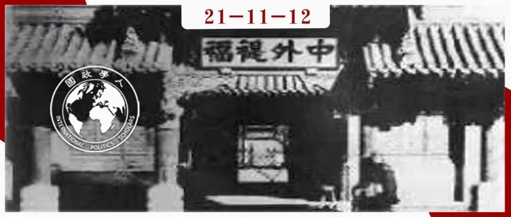

收录于合集 #《国际关系前沿》2021年第12期 22个

作品简介
作者： 早丸一真 Kazumasa Hayamaru 神奈川大学中国研究所讲师。研究领域是中国古代历史。
编译： 邓浩然 （立命馆大学国际关系学院）
来源： Hayamaru, K. (2021). A critique of Chinese diplomatic modernization narratives: reinterpreting shifts in Qing foreign affairs institutions in the early 1860s from the Qing perspective, International Relations of the Asia- Pacific , 2021;, lcab022, https://doi.org/10.1093/irap/lcab022
归档： 《国际关系前沿》2021年第12期，总第39期。

内容摘要
长期以来，学者们一直以西欧外交范式的视角来解读 晚清时期中国外交制度框架的转变 。然而，这种历史研究方法不能剖析最初发起这些转变的清政府官员的本土视角。本文将以19世纪60年代的 总理衙门 为例，试图理解清政府在这一时期建立外交新框架的动机和考量。对清朝来说，应对西方威胁所建立的新机构以及其实现的功能并不重要，重要的是如何最终废除这些新的制度，并恢复一种旧的、理想化的实践形式。
文章导读
众所周知，18世纪末，乔治•马戛尔尼勋爵(Lord George Macartney)曾被派往中国，请求签署一项旨在建立中英正式贸易关系的商业条约。正如许多主流的历史记载所述，清政府不顾英国的愤怒拒绝了这一要求。与此同时，清政府也拒绝了马戛尔尼关于双方建立永久外交代表机构的请求。根据中国第一历史档案馆的记载，乾隆皇帝认为建立外交机构不符合“天朝礼制”，因此必须“不以任何方式进行迎合”，那么我们到底该如何理解乾隆皇帝的话呢？
“天朝”这一称谓，始自中国汉朝，意指本国本朝是世界的政治、经济、文化中心，是在各个方面领先于周边蛮夷的“天朝上国”。 这个词在多个朝代中被用作与周边国家和人民交往的自我参照工具。因此，它可以被宽泛地视为“中国”的前身，尽管完全没有国家地位的内涵。然而，对于今天的中国来说，这个词带有负面的内涵，会让人联想到“一个固执、墨守成规、固守过去辉煌的政权，尤其是19世纪的清朝”。这种负面联想可以追溯到近代中国历史叙事中对天朝的描述。在这些历史文件中，这个术语被视为一个过时的前现代遗迹，随着现代中国的诞生而消亡了。因此，天朝被视为前现代中国的代名词，突出其受制于落后和无能的满族宫廷的特征。
至于体制，Immanuel C. Y. Hsu在英语中把这个词译成了“basic institution (基本机构)”。然而，更具体地来说，我们可以将其理解为支撑一个王朝及其权力结构的各种制度、法律和礼仪的集合。从官僚主义的角度看，它也构成了一种理想状态，即上述组件都以完美和谐的方式组合在一起，并满足了统治集团的期望。然而，这个理想状态并不是一成不变的，它可以进化，也可以根据紧急情况做出临时的改变。
对于很多历史学家来说，“天朝体制”这样的提法证明了清朝的官僚体制是一个静态僵化的体系。诚然，如果从西方视角审视清朝官员的言论的话，会认为清政府完全是基于傲慢和不理解拒绝了西方要求的平等协商权。然而，这些解释是否真正地代表了清政府背后的真实意图? 本文认为，现今的历史研究成果过度依赖于西方视角，而如果从清政府的角度进行细致剖析的话，我们将能够得到更接近于历史现实的结论。事实上，对于清政府来说，当天朝体制被中断或在某种程度上被妥协的时候，清朝的官员往往会灵活地采用制度手段来恢复这个理想。清朝在进行制度调整时，并不关心这些新的政府机构如何有效地应对新的挑战，而是关注于如何在未来实现回到以前的制度安排。本文将着重论证清政府设置的总理衙门(通常被理解为清朝的第一个现代“外交部”) 是被故意设计成一个无效的机构的，并由此解释清朝官僚价值体系的理论基础。
01
为什么本土视角被忽视了？
实际上，由于中文资料的匮乏，第一波现代中国外交研究开始于一种依赖非中文资料的形式。在有限的中文资料中，因为史学家历史研究手段的西方化，导致历史的解读也未能展现清政府本土的观点。比如说，在1929
30的出版的《筹办夷务始末》中，编者汇集了一系列的1830年代到1870年代由清政府视角出发观测到的的历史事件。虽然这一汇编让从清朝的角度探讨晚清“外交史”成为可能，但使用它的学者都是精通西方史学方法论的专家。因此，他们对《筹办夷务始末》的解读大体基于西方范式，导致对历史现实的理解出现了偏差。
19世纪60年代和70年代早期被广泛认为是中国作为一个新的主权国家进入“国际社会”的时期。然而，在当时的中国，没有类似外交部的外交政策机构，没有类似外交部长的专门监督外交政策的职位，也没有海外常驻外交使团。因此，清朝官员并没有感受到他们与外国势力的互动，以及他们在这些互动中采用的国际性规则。正是这种清朝官员的“无意识”扭曲了清朝官员对他们所生活的世界的认知。本文将通过重新评估总理衙门的设立来说明与此机构建立相关的关键文件是如何被史学家误读的。在此过程中，本文希望能够对这个案例进行本土化的阐释。
02
从清代的角度重新解读总理衙门
当恭亲王和他的同事们在1861年首先建立总理各国事务衙门时，咸丰皇帝曾表示他对其名字的适用性的顾虑。咸丰皇帝认为这个名字应该包括“通商”这个词。学者们将这种观点解释为清朝希望与外国的谈判仅限于“贸易”，从而拒绝主权平等的提法。但是清朝的官员们还是建议咸丰皇帝将“通商”这个词从对外的官方叙述中删除，因为清朝官员担心这个词的使用会让外国外交官认为总理衙门的职权范围不超越贸易，从而引发不必要的争端。根据Banno的记载，这个建议得到了皇帝的同意，并导致了相同机构在对内对外拥有不同的头衔：在与外国列强的交涉中，这个机构以“总理各国事务衙门”的形式出现；在清政府内部，它被称为“总理各国通商事务衙门”。
关于“通商”一词是否应该并入总理衙门的名称，这一讨论似乎微不足道，但事实并非如此。这两个头衔在清朝官僚体系中在本质上有不同的含义。对于清政府来说，“对外贸易”只是“夷务”的一种形式而已。因此在总理衙门的名字中包含这个词，意味着这个机构本身可以被理解为在“蛮夷事务”的框架下运作。因此只要这些谈判是在“蛮夷事务”的背景下进行的，而不是主权平等国家之间的外交，清政府就可以接受与外国列强进行谈判。
鉴于清朝试图将总理衙门定位于此，我们应该如何理解这个机构？事实上，现今的历史研究并不清楚清政府对总理衙门的目标到底是什么，以及这些目标是否影响了总理衙门的长期管理。因此，学者们常常忽略了清朝外交谈判方式的一个关键点，即： 如果可能的话，清朝会尽量避免与外国外交官打交道 。我们需要意识到的是，清政府试图设计一个表面上与外国外交官互动的系统，而实际上却能够利用这样的机构避免外交谈判。只有意识到这一点，我们才能更全面地理解清朝外交的全貌。
03
总理衙门功能的夸大
1860年前后，清朝的外交体制发生了诸多变化，学者们主要关注的是总理衙门，中国海关总税务司，以及在天津和上海的工部局的设立。此前，许多日本史学家曾提出用等级体系来理解上述机构之间的关系，即在这个体系中，总部位于首都的总理衙门对两个监督机构的运作施加权力。之所以会有这样的理解，是因为历史学家Banno M.在日本史料《近代中国研究》中，曾经引用恭亲王的话（英文翻译）：“我（恭亲王）和我的同事在最初的提案中要求在天津和上海设立工部局的主要目的是将南部和北部的事务管理分开，并‘汇总于京师’。就像头脑指挥胳膊和手指。”然而这实际上是断章取义的结果。在Banno的翻译中，他在方括号中添加了以下短语:“从首都操作整个机构”(北京から全機構を運転)。这个短语在原文中没有，是由Banno添加的，以帮助阐释文本的含义。然而，这一澄清扭曲了历史文件的初衷。因为在这句话之后恭亲王表示：“如果工部局在天津能够让‘夷酋’感到满意，那么他们将在首都无事可做，并最终会沮丧地想到回家。”这种让天津取代北京的愿望才是恭亲王真正想要的结果。
意识到天津的实际作用对于理解清政府的行为至关重要。事实上，在19世纪60年代初，当除英、法、俄、美以外的其他国家开始试图通过和约与清朝建立正式关系时，清政府都尽可能避免其与清朝建立和约关系。当和约谈判不可避免时，清朝试图将这些谈判控制在上海或至少是天津，或者阻止这些国家在首都设立常驻大使。换句话说，清政府的重点一直是如何将谈判控制在首都之外，而不是如何加强或巩固一个以首都为中心的体系。
我们已经看到重读这一重要的历史文件对总理衙门的制度地位提供了重要的洞见。更重要的是，它也为进一步理解清政府对该机构的意图提供了重要的帮助。根据中华书局编辑部的资料，清政府认为：
在建立这个新办事处时，我们给蛮夷一族的印象是，这是一个负责所有外交事务的地方。这意味着它的名字将受到人们的尊敬。然而，从我们的角度来看，这个机构的地位相当于四译馆（清代所设掌管接待四方邻国贡使和翻译边疆民族及邻国语言文字的机构）。在审议和决定与总理衙门的工作人员、绩效评估和费用有关的事项时，我们必须确保其运作仍然是临时的和简单的。事实上，我们必须悄悄地努力防止总理衙门永远超越其他办事处的地位，以展示中华文明对外夷的优越性。
在这里，我们可以看到，在清朝建立总理衙门之后，清政府立即寻求将这个机构作为一个重要的对外事务机构。然而，此文件也表明，清朝在向外国展示它的同时，也寻求了一种减少其运作功能的方法。这样的机构远远不同于Banno对总理衙门的解读。坦率地说，现实情况是，当我们用这样的词语来定位或描述总理衙门时，我们是被一个距今150年左右的清代戏法所迷惑。第一手资料表明，对于清朝来说，最理想的情况是根本就没有总理衙门。面对西方的干涉，清政府别无选择，只能将总理衙门作为一个临时机构，而一旦所有的国内军事问题都得到解决，总理衙门即可停止运作。
清政府在总理衙门成立后立即缩减其规模，削弱其权威，就体现了这一制度愿景。冈本隆也曾指出，由于总理衙门在通商口岸没有直接下属，缺乏财政和军事支持，从一开始就严重限制了它的决策能力和影响变革的能力，而这种状况并不代表清政府的无能，恰恰相反，这与清政府对该机构最初的制度设想是一致的。总理衙门之所以能够与当时的官僚体制和谐共存，正是因为它效率低下、行动迟缓。对于清政府来说，最重要的不是总理衙门本身的创新，而是以前的先例如何在以后取代它。虽然总理衙门最终不得不将通商一词从其名称中去掉，并且从未按照最初的计划被取代，但是，这些事实并不否定从修正主义的角度重新评价该制度的价值。
通过对历史文件的重新分析，我们了解到三个重要事实。 首先，清政府一直努力将总理衙门的权限限制在贸易范围内。其次，清政府投入了大量精力，以限制该机构的规模和权威。第三，清政府最终希望恢复其原有的处理对外事务的制度安排。 虽然清政府对总理衙门的最初计划没有完全实现，但他们阻止总理衙门全权负责外交事务的努力却取得了显著的成功。更重要的是，没有证据表明清朝曾试图巩固总理衙门的权威，并将其转变为一个更强大的国家机关。
04
结论
在总理衙门的申请书上，恭亲王和他的同僚们对朝廷所面临的情况作了如下的分析：
太平天国和捻军正在蹂躏着我们的土地，就像一种无法驯服的疾病折磨着我们国家的心脏。通过陆地与我们直接相连的俄罗斯是一个威胁，它就在我们伟大国家的臂弯旁，正在慢慢地考虑入侵的恰当时机。对英国来说，贸易就是一切。他们是一群残暴的暴民，他们无法理解理性，所以我们必须尽一切力量来约束他们。如果不这样做，就意味着失去我们的独立。这是一种折磨着我们国家躯干和四肢的疾病。对于大清来说，当务之急必须是消灭太平天国和捻军，在这之后，我们应该采取行动遏制俄罗斯，然后是英国。
此文件表明，19世纪60年代初期，清政府最紧迫的问题是内部叛乱，之后才是是如何与俄罗斯与英国打交道的问题。然而，这个比喻的使用也揭示了清朝如何不区分这些威胁是“内部的”或“外部的”。相反，它们都是折磨或发生在一个单一的、统一的身体内的疾病。无论是太平天国、捻军、俄国人还是英国人，他们都联合起来反抗天朝。
对清朝来说，重要的不是新制度的建立，而是这些新制度最终如何被废除，旧制度如何恢复。而清政府这样的考量是西方史学研究方法无法理解的。正如这篇文章所表明的，当时的清政府并不奉行我们今天所理解的那种外交政策。清政府奉行的唯一“外交”政策是镇压所有不服从天朝的人，无论是太平天国、捻军、俄国人还是英国人。而这一项广泛的政策并不是我们今天所理解的外交机构可以实施的。为了更全面地理解中国近代外交史，我们需要整合超越西方经验的更广泛的分析视角。
译者评述
本文是日本学者对清朝历史的独特解读。通过大量的史料分析，作者从本土视角解释了清政府一系列政策举措的内因和（对清政府来说的）合理性。近年来，探索本土化视角作为一种分析方式在历史学和国际关系领域不断升温， 而这样的研究确实能够让社会科学学科摆脱西方中心主义。
在中国人看来，本文对史料的引用似乎有些不同寻常。这是因为本文引用的清朝历史文件首先被日本学者翻译成日文并保存，然后，在发表成国际期刊时，当代的日本学者又将日文的记录翻译成了英文，最后，在国政学人的平台再度被翻译成白话文普及给中国读者。虽然这样繁杂的翻译过程可能导致历史文件的部分失真，但读者也能借此体会到史料的跨文化解读带来的益处。多视角，多语言的历史解读或许能让我们更全面地理解一段跨文明交流的历史。
总体来说，国际关系这门学科对东亚历史的研究目前还十分匮乏，而这种系统性的缺失需要大量的历史研究才能填补。对于现今的中国来说，清朝的屈辱历史仿佛是是遥远的过去，不必深究。然而事实却恰恰相反。晚清的经历可以是从中国视角了解东亚国际关系的关键。在清政府与外国势力的不断交涉和妥协中，我们可以一窥西方国际系统对中华本土文明的压迫与解放。
词汇整理
本土的 Autochthonous
主管 Superintendent
天朝 Celestial Dynasty
对话人 Interlocutor
权限 Purview
审校 | 黎开朗 赵旌宏
排版 | 贾希铭 陈炜昊
文章观点不代表本平台观点，本平台评译分享的文章均出于专业学习之用, 不以任何盈利为目的，内容主要呈现对原文的介绍，原文内容请通过各高校购买的数据库自行下载。

国政学人
支持学术公益与知识传播
微信扫一扫赞赏作者 __赞赏
已喜欢，对作者说句悄悄话
取消 __
发送给作者
发送
最多40字，当前共字
上一页 1/3 下一页
长按二维码向我转账
支持学术公益与知识传播
受苹果公司新规定影响，微信 iOS 版的赞赏功能被关闭，可通过二维码转账支持公众号。